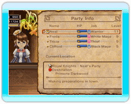
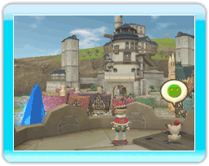

23
|
Autres éléments |
 |
De nombreux éléments sont là pour vous aider à administrer votre royaume.
● Pavlov  Ce pingouin irascible suit le roi partout et lui donne accès à certaines informations sur les donjons, le profil des aventuriers, les nouvelles du royaume et autres données utiles.
Ce pingouin irascible suit le roi partout et lui donne accès à certaines informations sur les donjons, le profil des aventuriers, les nouvelles du royaume et autres données utiles.Pavlov vous permet également de modifier les commandes de la caméra grâce à son menu d'options. ● Chime's Tavern (Taverne de Chime) En vous rendant dans cet établissement, vous pouvez créer votre propre équipe d'aventuriers. Vous pouvez également y suivre la progression en temps réel des équipes d'aventuriers. ● Mogiosh's Lookout Tower (Tour de guet de Mogiosh)  Allez parler à Mogiosh, à l'entrée de la tour de guet, pour grimper à son sommet et avoir un meilleur aperçu de votre royaume. Mogiosh possède aussi de précieuses informations sur les bâtiments et sur d'autres sujets liés au royaume. Allez lui parler lorsque vous avez besoin d'aide. |
 |
 |
 |